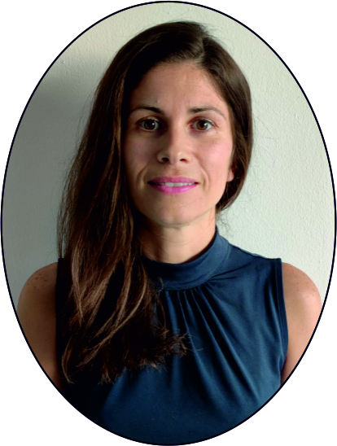

Soy Profesora Ayudante Doctora en la Universidad de Málaga, donde investigo los mecanismos cognitivos y cerebrales del lenguaje, la afasia post-ictus y la plasticidad cerebral. Me doctoré en Biomedicina (Cum Laude, Premio Extraordinario, 2019) y he realizado 21 meses de estancias de investigación en centros de referencia nacionales e internacionales. He publicado 24 artículos en revistas de alto impacto (Neurology, Brain and Language, Cortex, Scientific Reports) y 5 capítulos de libro. Soy Editora Invitada en Brain and Language y miembro de la red internacional INCLUDE. Compagino investigación, práctica clínica y docencia universitaria.
I am an Assistant Professor at the University of Málaga, where I investigate the cognitive and neural mechanisms of language, post-stroke aphasia and brain plasticity. I completed my PhD in Biomedicine (Cum Laude, Extraordinary Award, 2019) and have carried out 21 months of research stays at leading national and international centres. I have published 24 articles in high-impact journals (Neurology, Brain and Language, Cortex, Scientific Reports) and 5 book chapters. I am a Guest Editor at Brain and Language and a member of the international INCLUDE network. I combine research, clinical practice and university teaching.
